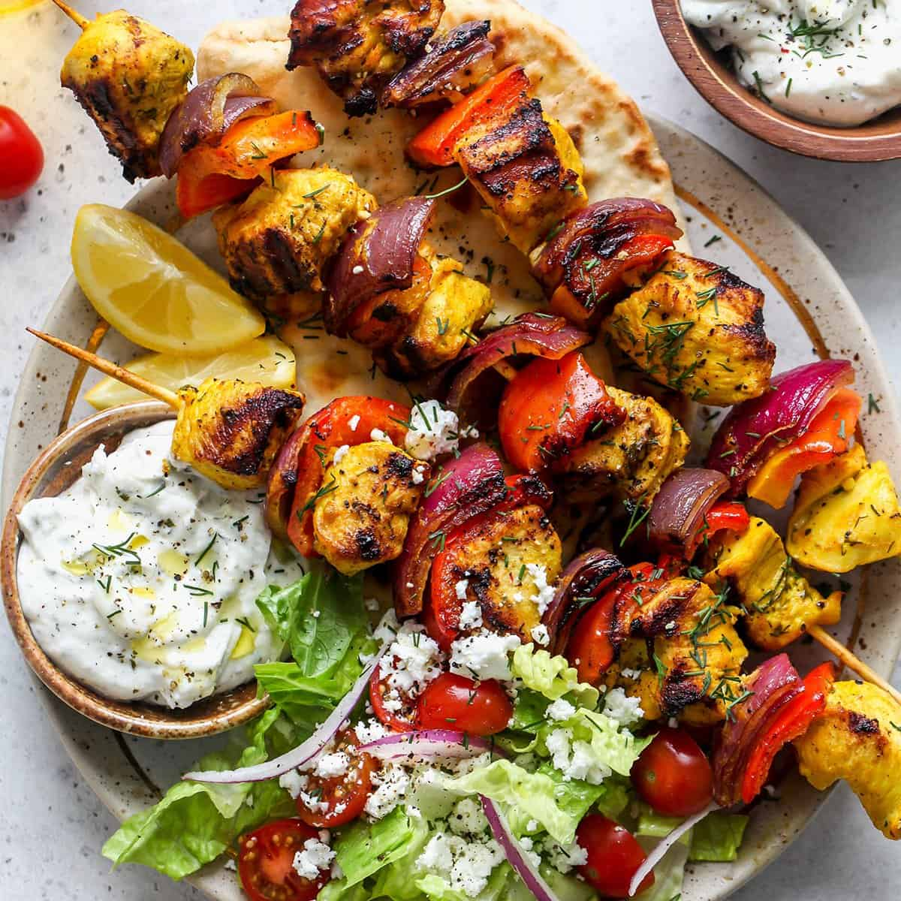

One of my go-to chicken recipes for summer cookouts, these Middle-Eastern style grilled chicken kabobs are wonderful over a bed of rice pilaf or served with a Greek salad. The chicken is marinated in yogurt, olive oil, lemon, garlic and spices, and then grilled over an open flame until juicy and golden brown.
Ingredients:
- Greek yogurt
- Extra virgin olive oil
- Paprika, cumin, cinnamon, red pepper flakes,salt, and pepper
- Lemons
- Garlic
- Boneless Chicken
- Red onion
Recipe:
- Make the Marinade: In a medium bowl, combine the yogurt, olive oil, paprika, cumin, cinnamon, red pepper flakes, lemon zest, lemon juice, salt, pepper and garlic.
- Prep the Chicken and Thread onto Skewers: Trim the chicken of any excess fat and gristle. Don’t worry about getting every last bit of fat; most of it will melt off on the grill. Then cut the meat into bite-size pieces. I think it’s easiest to use kitchen shears as opposed to a knife.
- Marinate the Chicken: Place the kabobs on a baking sheet lined with foil, and then brush the marinade all over the meat, coating well. Cover and let the kabobs sit in the fridge for at least 8 hours or overnight.
- Grill the Kabobs: Preheat the grill to medium-high heat, grease well, and then grill the kabobs until golden brown.